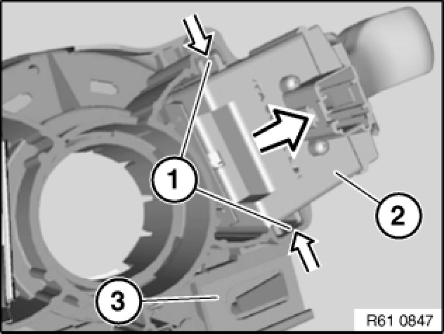

Removing and Installing/Replacing Turn Indicator/Headlight Dipping Switch
61 31 016 - Removing and installing/replacing turn indicator/headlight dipping switch

Necessary preliminary tasks:
- Disconnect battery negative lead Disconnecting and Connecting Battery Negative Lead
- Remove fixture for steering column stalks Removing and Installing/Replacing Fixture for Steering Column Stalk
- E85, E86 only: Remove cruise control switch

Press locks (1) and feed direction indicator/dipping stalk (2) in direction of arrow out of fixture for steering column stalk (3).